Nos Modèles de Climatiseurs
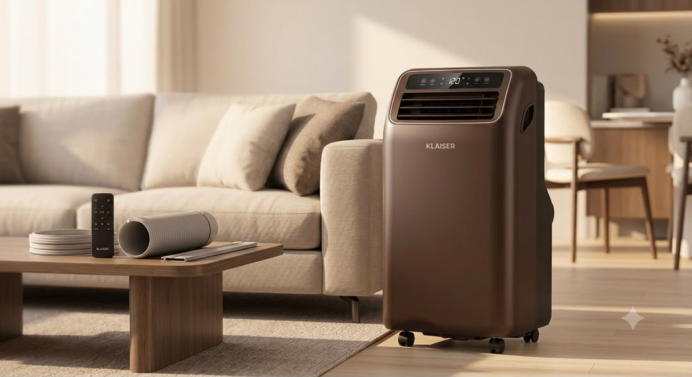
Modèle : Climatiseur Mobile KLAISER MX120
Finition : Design marron élégant avec panneau de commande et affichage LED.
Prix : 399,90 €
Fonctionnalités : Puissance de 3500W, fonction réversible pour rafraîchir et chauffer, télécommande incluse et déplacement facile sur roulettes.
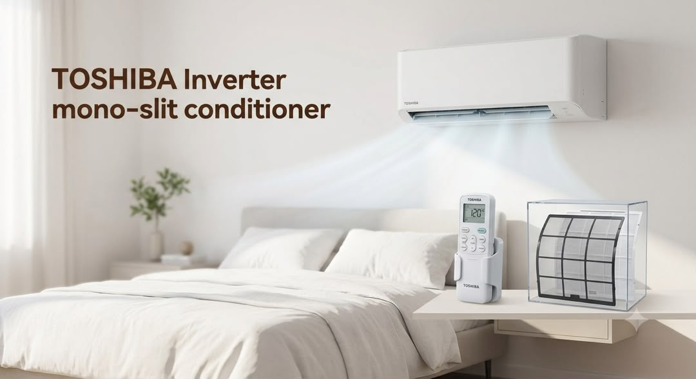
Modèle : Climatiseur Mono-split TOSHIBA Inverter
Finition : Unité murale blanche, compacte et discrète qui s'intègre harmonieusement dans tout intérieur.
Prix : 639,00 €
Fonctionnalités : Classe énergétique A++ en froid, technologie Inverter pour réguler la température, très silencieux et compatible Wi-Fi.
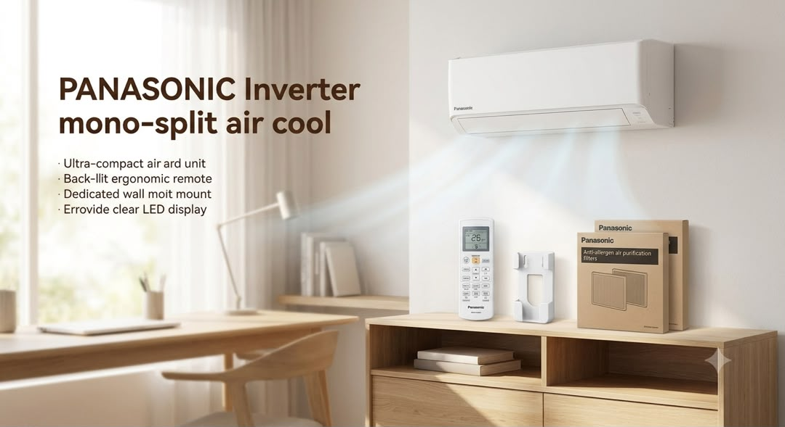
Modèle : Climatiseur Mono-split PANASONIC Inverter
Finition : Design ultra-compact blanc, idéal pour les petites pièces et les chambres.
Prix : 659,00 €
Fonctionnalités : Très silencieux avec seulement quelques décibels en mode veille, classe énergétique A++ et technologie Inverter pour économiser l'énergie.
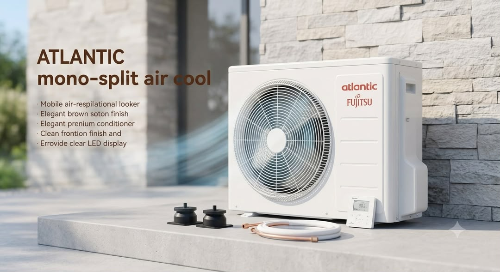
Modèle : Pompe à chaleur ATLANTIC FUJITSU
Finition : Boîtier blanc classique, robuste, conçu pour durer.
Prix : 689,00 €
Fonctionnalités : Modèle d'entrée de gamme performant, classe A++ pour le chaud et le froid, régulation électronique précise.
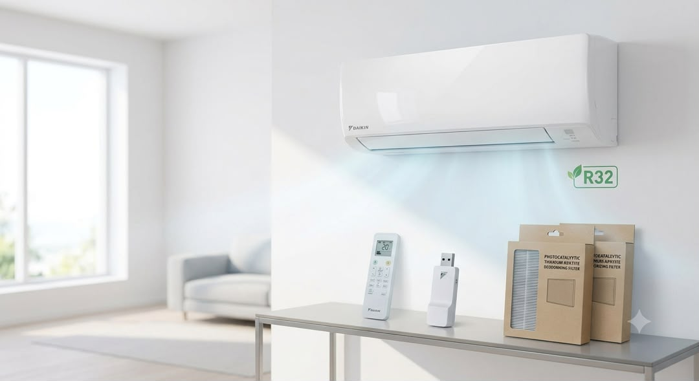
Modèle : Mono-Split DAIKIN Sensira Bluevolution
Finition : Design moderne au style épuré, couleur blanc brillant.
Prix : 729,00 €
Fonctionnalités : Utilise le fluide frigorigène R32 plus respectueux de l'environnement, contrôle Wi-Fi inclus via une application dédiée et système de filtration d'air.
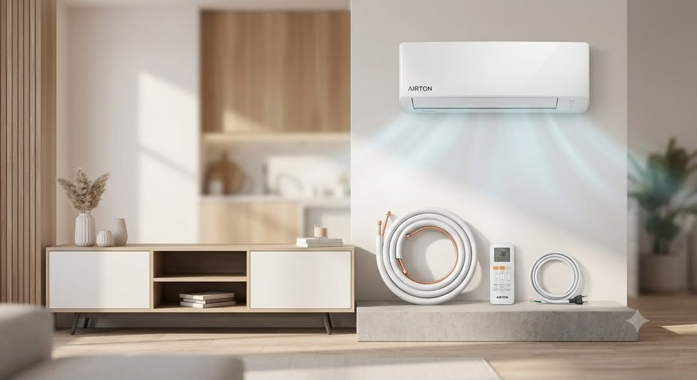
Modèle : Climatiseur Mono-split AIRTON Inverter
Finition : Façade épurée et moderne, adaptée à tous les salons contemporains.
Prix : 499,00 €
Fonctionnalités : Modèle réversible chaud/froid, système prêt à poser breveté pour une installation simplifiée par soi-même, et télécommande multifonction.
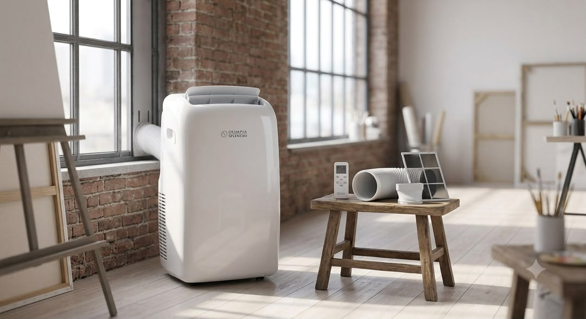
Modèle : Climatiseur Mobile OLIMPIA SPLENDID Dolceclima
Finition : Blanc brillant, compact et avec des lignes douces très esthétiques.
Prix : 450,00 €
Fonctionnalités : Idéal pour les pièces de taille moyenne, fonction de déshumidification indépendante, roulettes pivotantes pour le transport et faible impact environnemental.
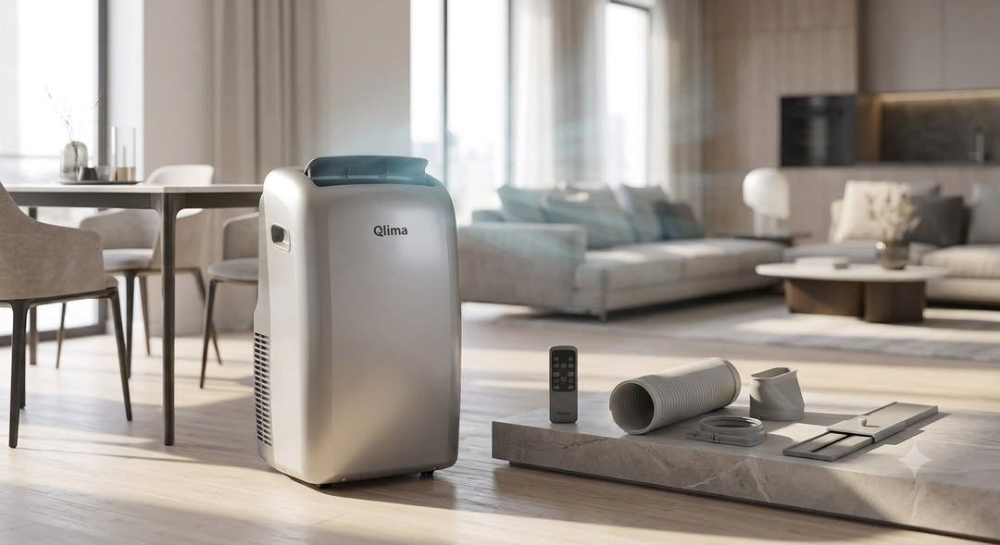
Modèle : Climatiseur Mobile QLIMA P 528
Finition : Couleur silver moderne et élégante.
Prix : 599,00 €
Fonctionnalités : Capacité élevée adaptée aux grands volumes, écran d'affichage sur le dessus, minuterie programmable et télécommande fournie.
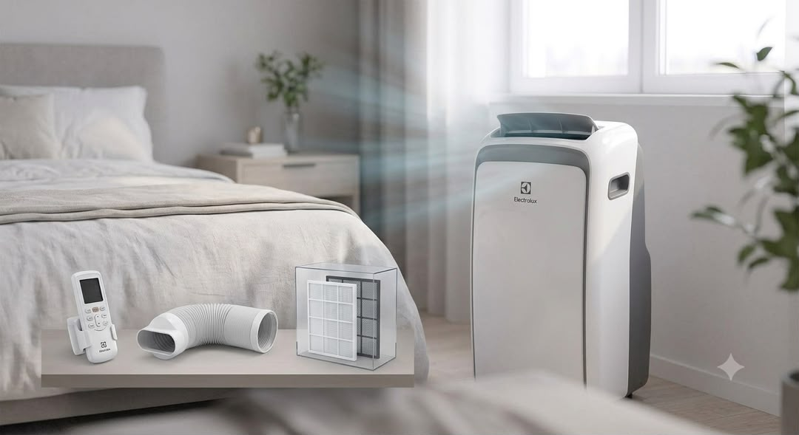
Modèle : Climatiseur Mobile ELECTROLUX EXP26U558HW
Finition : Blanc et gris très contemporain, panneau de contrôle tactile minimaliste.
Prix : 499,00 €
Fonctionnalités : Très silencieux en fonctionnement, appareil réversible pour s'adapter à l'été comme à l'hiver, et connectivité intelligente pour piloter à distance.
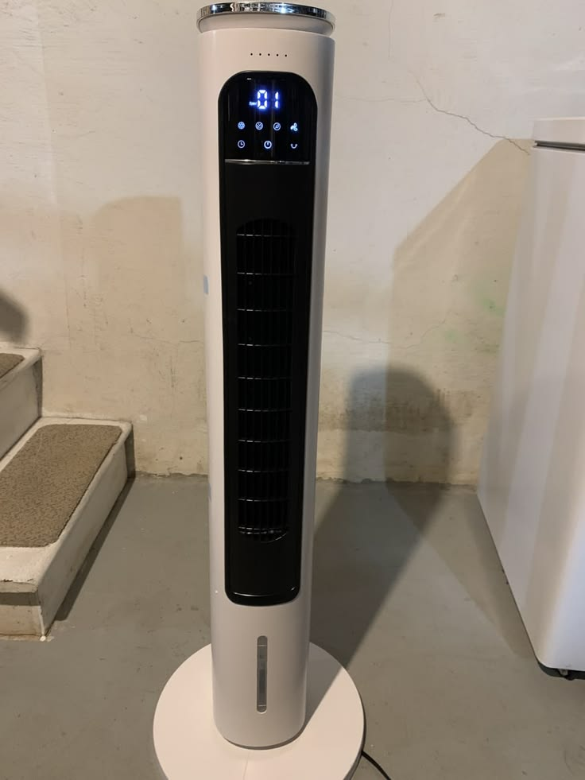
Modèle : Climatiseur Mobile COMFEE Siculus
Finition : Boîtier robuste et blanc, design de petite taille idéal pour les espaces restreints.
Prix : 299,00 €
Fonctionnalités : Solution d'appoint économique, fonction minuterie pratique pour gérer les heures de fonctionnement, et mode nuit pour un sommeil paisible.
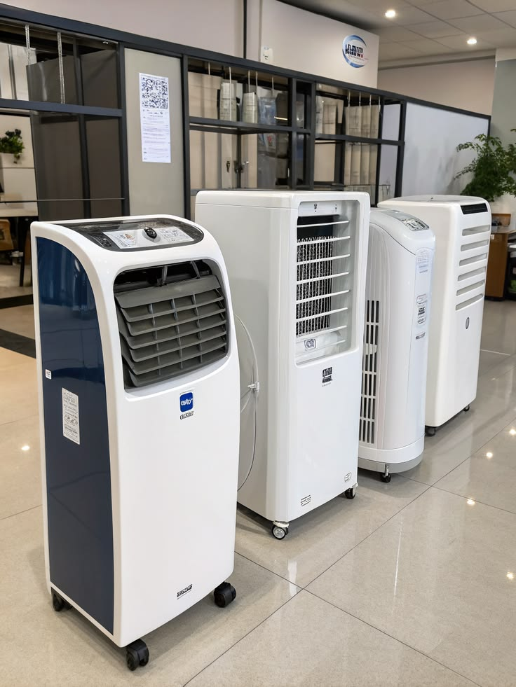
Modèle : Climatiseur Mobile ROWENTA Turbo Cool
Finition : Design compact noir et blanc laqué, s'intégrant discrètement dans les intérieurs modernes.
Prix : 449,99 €
Fonctionnalités : Idéal pour les pièces jusqu'à 30m², mode éco pour réduire la consommation d'énergie, filtration de l'air haute performance et format ultra-compact.
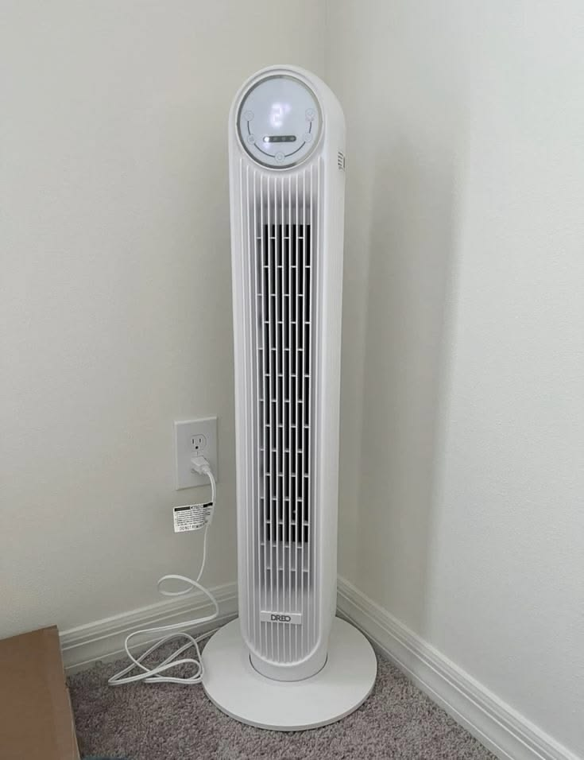
Modèle : Climatiseur Mono-split MITSUBISHI ELECTRIC MSZ-HR
Finition : Unité murale blanc mat épuré, très compacte.
Prix : 189,00 €
Fonctionnalités : Performance énergétique A++ en mode froid, technologie Inverter très fiable, programmation hebdomadaire et option Wi-Fi.
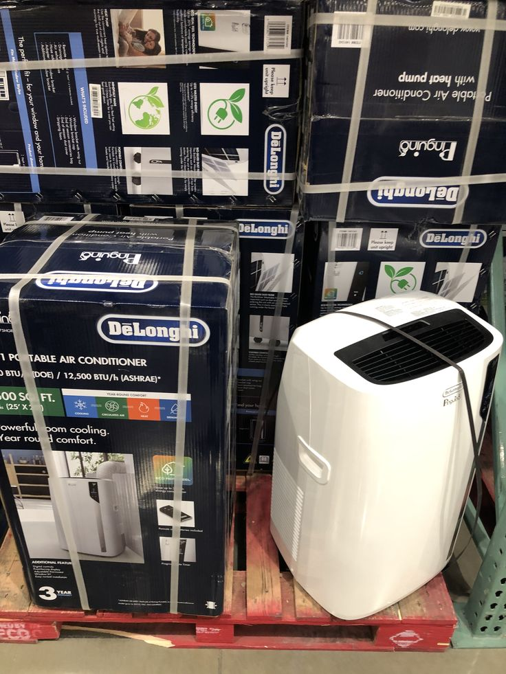
Modèle : Climatiseur Mobile WHIRLPOOL PACW29COL
Finition : Design blanc épuré avec un panneau supérieur noir à affichage LED dynamique.
Prix : 479,00 €
Fonctionnalités : Technologie 6ème Sens (adapte automatiquement la température et l'humidité), fonction "Around U" sur la télécommande pour un confort sur-mesure, et filtre HEPA anti-poussière.
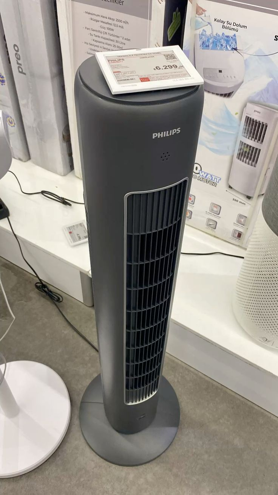
Modèle : Climatiseur Mobile DE'LONGHI Pinguino PAC EL92
Finition : Finition haut de gamme noir mat, avec poignées intégrées et écran tactile élégant.
Prix : 349,90 €
Fonctionnalités : Technologie Eco Real Feel (ajuste à la fois la température et l'humidité pour économiser 30% d'énergie), gaz écologique R290 et roulettes multidirectionnelles.
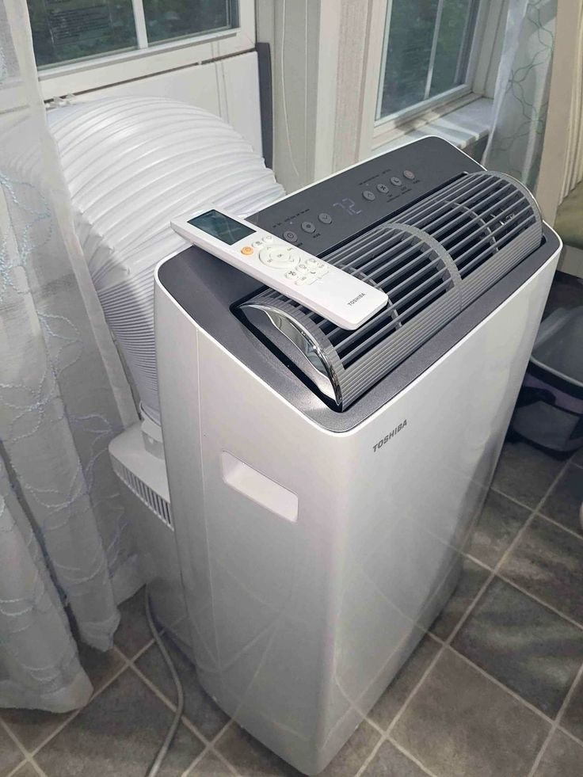
Modèle : Climatiseur Mono-split SAMSUNG Cebu
Finition : Lignes fluides et modernes, blanc brillant avec affichage de la température invisible au repos.
Prix : 549,00 €
Fonctionnalités : Équipé de l'intelligence artificielle (analyse les conditions de la pièce pour adapter les modes), contrôle Wi-Fi natif via l'application SmartThings, et compresseur Digital Inverter Boost.
Modèle : Climatiseur Mobile KLARSTEIN New Breeze 9
Finition : Boîtier au choix noir brillant ou blanc, très minimaliste et contemporain.
Prix : 389,99 €
Fonctionnalités : Idéal pour les petits budgets, 4 niveaux de ventilation, minuterie d'arrêt/allumage sur 24 heures et mode nuit extra-silencieux.
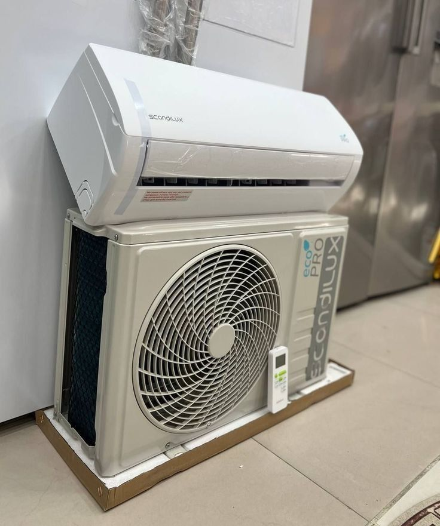
Modèle : Climatiseur Mono-split LG Standard Plus
Finition : Design classique blanc, très robuste et traitement anti-corrosion sur l'unité extérieure.
Prix : 719,00 €
Fonctionnalités : Compresseur Dual Inverter garanti 10 ans, refroidissement ultra-rapide, nettoyage automatique de l'échangeur pour éviter les moisissures et Wi-Fi intégré.
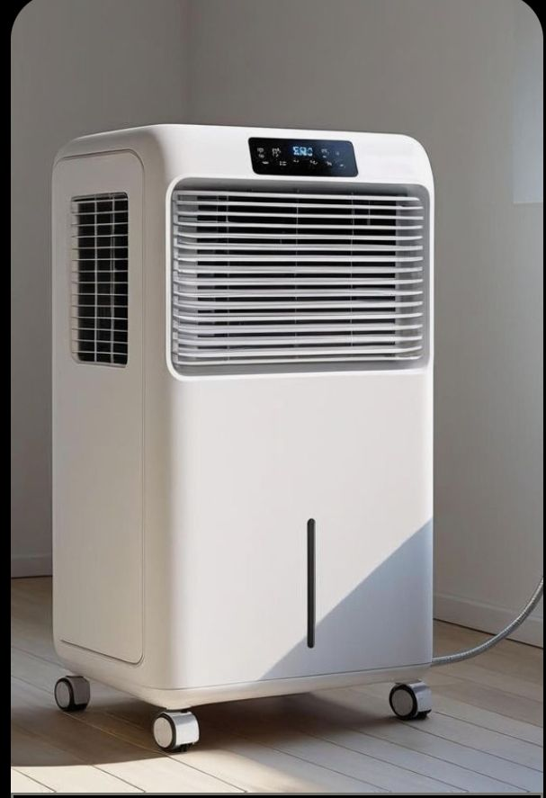
Modèle : Climatiseur Mobile TCL TAC-09CPB
Finition : Look cylindrique original, tout blanc, très compact et facile à ranger dans un placard après l'été.
Prix : 529,00 €
Fonctionnalités : Capacité de refroidissement de 2600W, fonction déshumidificateur performante, kit fenêtre inclus pour l'évacuation et télécommande ergonomique.
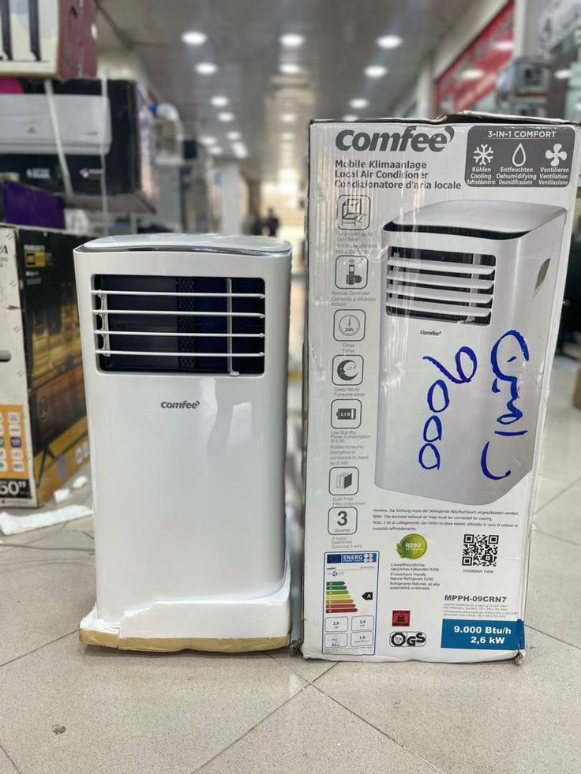
Modèle : Climatiseur Mono-split HAIER Tundra Plus
Finition : Façade mate d'un blanc pur, discrète et conçue pour un entretien et un dépoussiérage rapides.
Prix : 479,00 €
Fonctionnalités : Technologie "Intelligent Air" (oriente le flux d'air vers le haut en mode froid pour éviter les courants d'air directs), très faible niveau sonore et redémarrage automatique après coupure de courant.
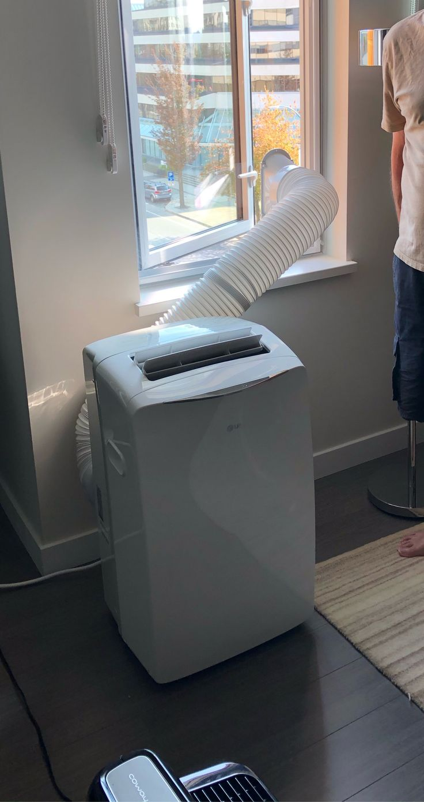
Modèle : Climatiseur Mobile HISENSE AP-09DR4SFJS
Finition : Design moderne bicolore blanc et anthracite avec boutons de commande physiques simplifiés.
Prix : 369,00 €
Fonctionnalités : Système d'évacuation automatique des condensats, mode Smart qui règle automatiquement la ventilation, et ailettes orientables motorisées.